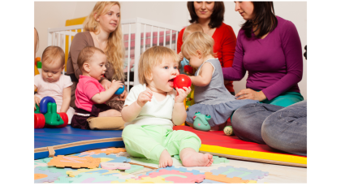

Jouer
Vous vous installez auprès des enfants pour un moment de jeux

Jeu | Informations[1]
Bambin assis qui tient une balle à la main. En fond, il y a des adultes et d'autres enfants assis au sol.
Vous vous installez auprès des enfants pour un moment de jeux
Bambin assis qui tient une balle à la main. En fond, il y a des adultes et d'autres enfants assis au sol.